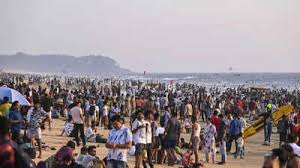

Tourism is the act of traveling to new places for leisure, exploration, or business. Goa, with its pristine beaches and vibrant culture, attracts millions of tourists each year. People come to experience the sun, sand, festivals, food, and unique Goan way of life. Tourism boosts the local economy and provides livelihoods to thousands. However, when unmanaged, it can also put stress on the environment and cultural heritage.
While tourism brings income, it also causes serious issues in Goa. Overcrowding on beaches, noise from parties, pollution, disrespect of local traditions, and illegal constructions are just a few examples. The beauty of Goa is being threatened by careless visitors and unchecked development. The charm of its peaceful villages is fading under tourist pressure. Cultural authenticity is at risk.
To protect Goa, tourists and locals must work together. Eco-tourism, awareness campaigns, strict waste control, promoting local arts, and respecting rules are steps toward sustainable tourism. Authorities must enforce regulations on illegal structures and noise limits. If we all act responsibly, Goa’s beauty can be preserved for generations.

What do you think? Should Goa limit tourism? Is there a better way to manage tourists? Do visitors understand the impact they leave behind? Share your thoughts below. Every opinion matters when it comes to saving a place we all love.
Your voice matters! Share your thoughts on how we can preserve Goa’s beauty while supporting responsible tourism. Your ideas can create change. 🌴💬